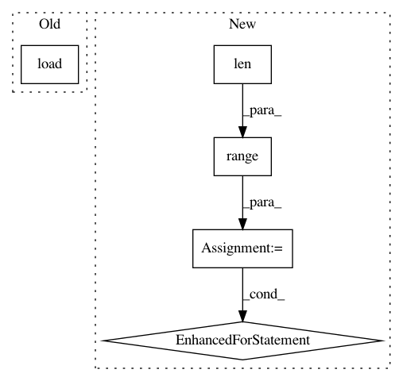

c45d42e03c5bc793c9a17b7176d4d985d7980eaa,tests/test_duet.py,DuetUnitTests,test_compute_masks,#DuetUnitTests#,149
Before Change
best_ind_path = os.path.join("duet_reference", "duet_benchmarks", "benchmark_best_ind.npy")
mask_path = os.path.join("duet_reference", "duet_benchmarks", "benchmark_mask.npy")
benchmark_best_ind = np.load(best_ind_path)
benchmark_mask = np.load(mask_path)
best_ind, mask = duet.compute_masks(duet.atn_peak, duet.delay_peak)
After Change
benchmark_mask = np.load(mask_path)
masks = duet._compute_masks()
for i in range(len(masks)):
assert np.all(benchmark_mask[i].mask == masks[i].mask)
def test_make_audio_signals(self):
duet = nussl.Duet(self.signal, 3)
duet.stft_ch0 = self.benchmark_dict["benchmark_stft_ch0"]
duet.stft_ch1 = self.benchmark_dict["benchmark_stft_ch1"]
In pattern: SUPERPATTERN
Frequency: 3
Non-data size: 5
Instances
Project Name: interactiveaudiolab/nussl
Commit Name: c45d42e03c5bc793c9a17b7176d4d985d7980eaa
Time: 2017-08-10
Author: daniel.felixkim@gmail.com
File Name: tests/test_duet.py
Class Name: DuetUnitTests
Method Name: test_compute_masks
Project Name: rusty1s/pytorch_geometric
Commit Name: 5cd8f0e4aa0a74122eed266dbf1f657dc833366b
Time: 2018-02-04
Author: matthias.fey@tu-dortmund.de
File Name: torch_geometric/datasets/dataset.py
Class Name: Dataset
Method Name: _process
Project Name: interactiveaudiolab/nussl
Commit Name: c45d42e03c5bc793c9a17b7176d4d985d7980eaa
Time: 2017-08-10
Author: daniel.felixkim@gmail.com
File Name: tests/test_duet.py
Class Name: DuetUnitTests
Method Name: test_duet_final_outputs